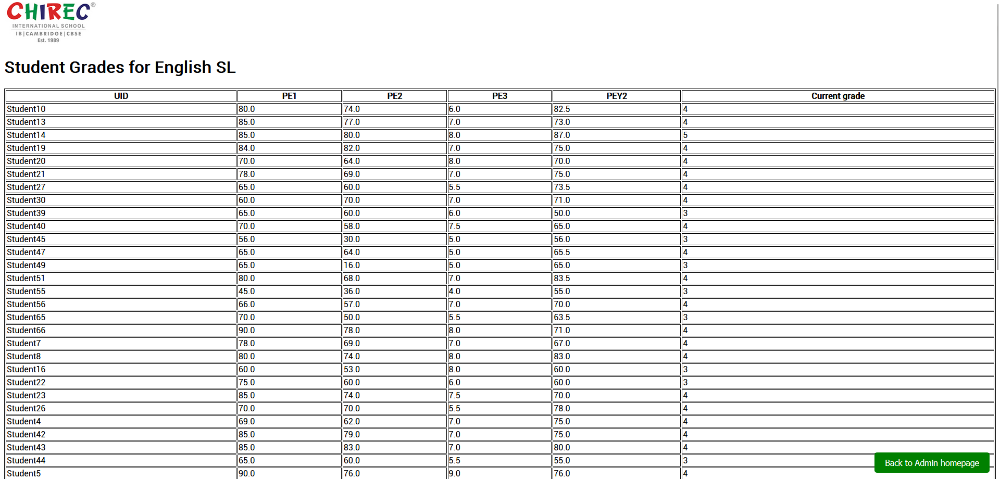

Teamed up with a classmate to create a web application to help our school manage IBDP predicted grades.
It allows students to view their grades and set goals for future exams, while also enabling admins to view students' grades, upload grades as an excel file, and manage subject grade boundaries.